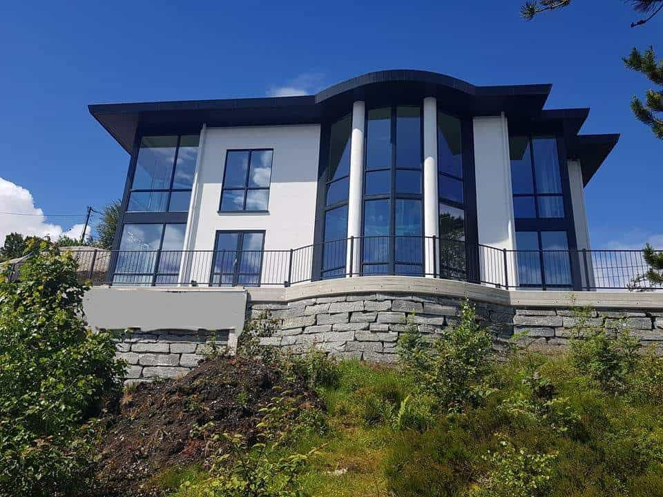
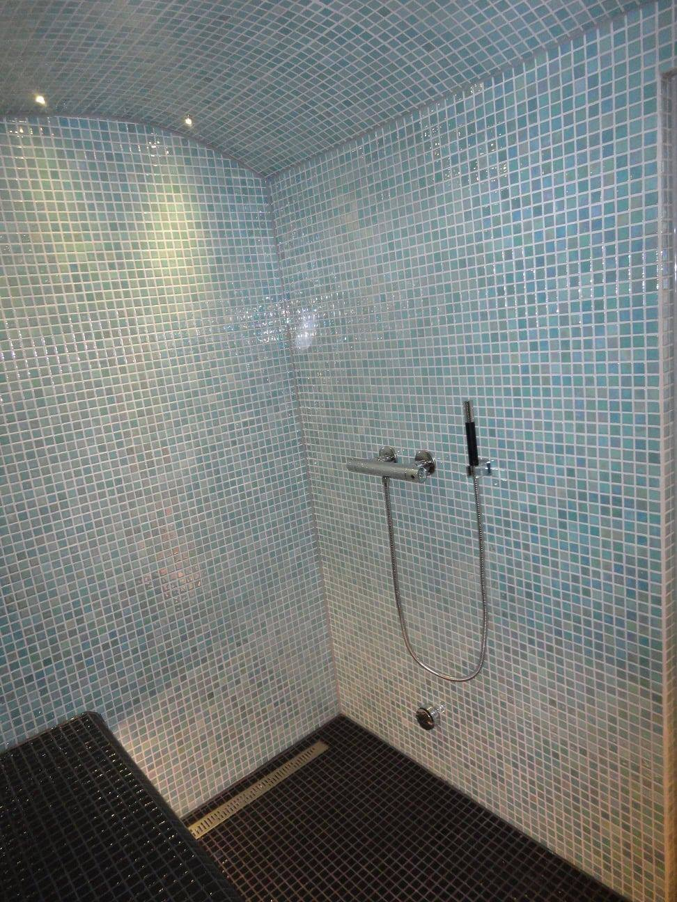
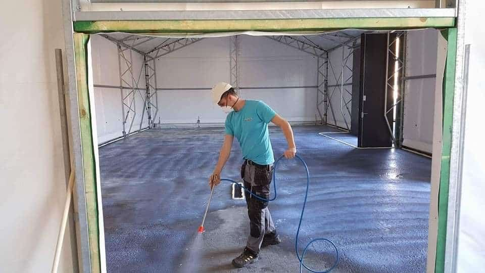
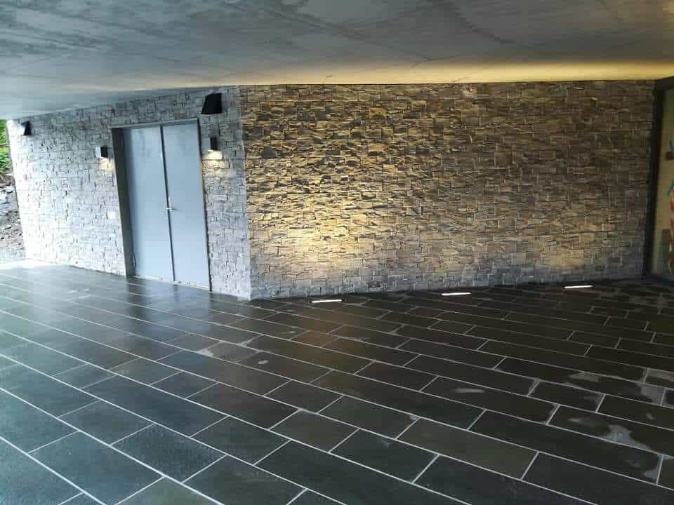

Tjenester
Fra grunnmur til pipe.
Vi leverer alt av arbeid innen murerfaget og tar både små og store jobber. Her er det vi gjør mest, og hva du kan forvente at vi tar ansvar for.
Bolig i mur
Nybygg og tilbygg i tegl, lettklinker og naturstein. Vi tar oss av bærende konstruksjoner, isolering, fuktsikring og overflater — og samarbeider med tømrer og elektriker der det trengs.
Mange lurer på om det går an å kombinere mur med store vindusflater. Det går, men det krever riktig oppbygging og at fukten får et sted å ta veien. Det er derfor vi alltid tar en befaring før vi gir pris.
- 01Nybygg og tilbyggLettklinker, tegl og kombinasjonsløsninger — dimensjonert for norsk vær.
- 02FuktsikringSåleband, drenering og detaljer som hindrer fukt i å vandre inn.
- 03OverflaterPuss, forblending og behandling som holder seg over tid.


Bad og våtrom
Vi er godkjent våtromsbedrift og bygger bad etter gjeldende krav: membran, fall til sluk, riktig flis og dokumentasjon på at alt er gjort i riktig rekkefølge.
Det er de små detaljene som avgjør om badet holder i tjue år: hjørner, gjennomføringer, slukmansjett og hva som skjer bak flisa. Vi går gjennom det skriftlig i tilbudet.
- 01TotalrenoveringRiving, oppbygging og ferdig bad med dokumentert membran.
- 02FlisleggingStore formater, mosaikk og mønster — med skjæring på stedet.
- 03DokumentasjonVi leverer det forsikringsselskapet spør om, før de spør.
Gulv: støping og avretting
Støp, avretting og flytende gulv i bolig, næringsbygg og verksted. Vi planlegger tørketid og herdetid inn i tidsplanen, slik at neste fag kan gå på gulvet når det faktisk er klart.
På store flater er det fall, rørgjennomføringer og sluk som avgjør om resultatet blir flatt der det skal være flatt — og heller der det skal være helling.
- 01AvrettingSelvnivellerende og armerte masser på store flater.
- 02GulvstøpMed varmekabler, fall og rør i samarbeid med rørlegger.
- 03Plan for tørkingMåling og dokumentasjon før neste fag slipper til.


Naturstein
Trapper, sokkeler, forblending, uteareal og peiser i ekte stein. Vi tilpasser på stedet, fordi stein sjelden passer perfekt i et ferdig mål — og fordi detaljene er hele poenget.
Ulendt terreng i Bergen er en del av jobben. Det betyr at vi ofte bygger støttemurer og trapper som må tåle frost, vann og bevegelse i grunnen.
Pipe, puss og vinter.
Tre tjenester som ofte bestilles i samme slengen — eller når vinteren kommer fort.
Pipe og ildsted
Trygt å fyre
Muring av pipe, innfesting og ildsteder. Vi dokumenterer føringen, slik at feieren og forsikringen er fornøyd.
Puss av fasade
Rett opp fasaden
Puss, reparasjon og overflatebehandling. Vi tar tak i det som vinteren har løftet eller sprukket opp.
Vintervedlikehold
Brøyting og strøing
Rammeavtaler for næringsbygg og borettslag. Vi har maskiner og mannskap som stiller når det snør — også om natten.
Usikker på hva prosjektet trenger?
Ta en befaring. Vi ser på forholdene, forteller hva som må gjøres, og hva det koster.